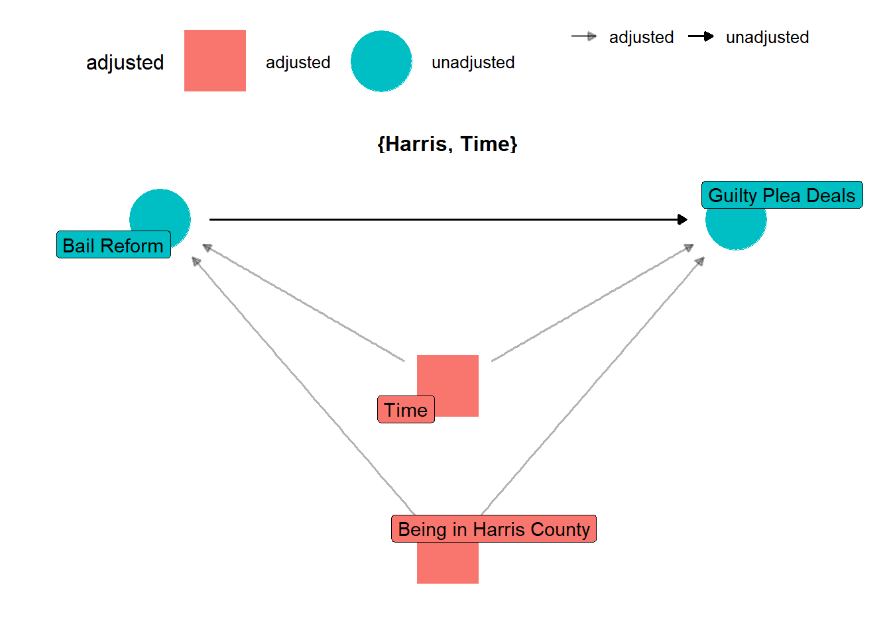

Introduction
There has been a lot of discussion recently about cash bail. As several places have made reforms to the cash bail system, including ending the practice for many charges, the impacts of these reforms are beginning to take shape. While some opponents to these changes worry that releasing individuals charged with a crime while they await trial will cause an increase in crime, there is no evidence of a correlation with increased crime rates (Preston & Eisenberg, 2022b). In fact, the opposite may be true; some places where cash bail has been largely eliminated have seen lower increases in crime than the national average or even reductions in crime when most places have seen increases due to the COVID-19 pandemic (Covert, 2022; Preston & Eisenberg, 2022a). Not only does cash bail not cause an increase in crime, but research suggests that increased pretrial detention is linked with higher rates of conviction and recidivism (Gupta et al., 2016; Lowenkamp, 2022). It is important to assess not only whether unintentional negative impacts occur when policies are reformed, but it is also important to assess the nature and degree of positive impacts to advance the widespread adoption of policies that are good for people and equality.
Program overview
In May 2016, a young woman filed a class action suit in the U.S. District Court for the Southern District of Texas against Harris County, Texas, and the Harris County Sheriff’s Department claiming that the county’s bail system violated the Equal Protection and Due Process Clauses of the Constitution. Bail amounts were set according to a predetermined schedule that did not take individual circumstances into consideration.
After more than three years in the courts, in November 2019, Judge Rosenthal approved the consent decree which required Harris County to make major reforms to its bail program. Reforms included amended hearing rules and a requirement for clear and convincing evidence that an individual can pay the bail amount required for release. The decree also provided more funding for representation for all misdemeanor bail hearings and a website for arrestees to access important case information to support compliance (O’DONNELL V. HARRIS COUNTY, 2019).
Money bail systems have long been utilized by the criminal justice system to detain individuals arrested for a crime while they await trial. In a study published in the Stanford Law Review, researchers found that pretrial detention leads to individuals pleading guilty simply to be released, receiving longer jail sentences, and increases the likelihood of the individual committing future crimes (Heaton & Stevenson, 2016).
Bail reform, including the elimination of money bail for most misdemeanor offenses, reduces socioeconomic inequality in the justice system, increases compliance with future court dates, and does not contribute to increases in crime in the area (Widra, 2022). This policy certainly decreases the length of time individuals are detained, and the negative impacts of detention have been well documented. Aside from less quantifiable consequences such as job and income loss while detained, time away from children and family, and the impact and trauma of those relying on the individual for financial and emotional support, there is plenty of empirical support linking pretrial detention to higher rates of conviction (Digard & Swavola, 2019). Reducing the amount of time individuals spend in jail before they are ever convicted of a crime is essential to increasing equality, reducing factors that contribute to criminal activity, and overall reducing harm to a community.
Program theory and implementation
The Fourteenth Amendment of the US Constitution protects liberty and equality stating, “No State shall make or enforce any law which shall abridge the privileges or immunities of citizens of the United States; nor shall any State deprive any person of life, liberty, or property, without due process of law; nor deny to any person within its jurisdiction the equal protection of the laws.” Cash bail systems violate this right by imprisoning individuals who have not been convicted of a crime simply for their inability to pay bail.
If the ultimate goal is to increase equality in the justice system while maintaining public safety, cash bail is impeding that goal. Detaining individuals because they are poor has a negative social and economic impact because it removes people from their families and their jobs. By reducing negative social and economic impacts, factors that contribute to poverty can be lessened or eliminated. A wealth of research exists to support the theory that poverty and inequality are positively correlated with increased crime (Fajnzylber et al., 2002; Fleisher, 1966; Freeman, 1999; Mohammed et al., 2018). Thus, it follows that removing cash bail for misdemeanors would lead to more equality, which may lead to reduced crime and reduced harm while maintaining public safety.
Detaining individuals without due process is not only unconstitutional and potentially a human rights violation, it also has negative impacts on the community. According to a 2018 study, more than half of inmates in local jails were parents to children under 18, and that percentage was even higher for women (Sawyer, 2018). In a survey conducted by George Mason University in 2016, 40.5% of detained parents reported that being in jail has or would change the living situation for their children (Kimbrell & Wilson, 2016). The impact on children when the parent they rely on for emotional and financial support is separated from them can be traumatic, significant, and permanent. The same survey also revealed that of the participants, 69.9% were employed before being detained, and of those 84.3% worried they would lose employment due to detention (Kimbrell & Wilson, 2016).
Based on the theory that cash bail systems discriminate based on financial status and detention has a negative impact on communities, reforming the bail system is an optimal solution to reduce inequality, crime, and harm in general.

Logic model
Describe the program’s inputs, activities, outputs, and outcomes. Pay careful attention to how they are linked—remember that every input needs to flow into an activity and every output must flow out of an activity. (≈150 words)
Inputs
- Case Law (O’Donnell v. Harris County)
- Amended hearing rules
- Increased funding
- Independent monitor
Activities
- Website development with court information for arrestees
- Training on the amended hearing rules
- Representation for all misdemeanor arrestees at their bail hearings
- Supervision by an independent monitor
- Hearings within 48 hours of arrest
- Prompt released from detention
Outputs
- Number of plea agreements
- Percentage of court compliance
- Rate of recidivism
- Number of people arrested and released
- Number of crimes reported
- Number of reported crimes committed by individuals released pretrial
- Unemployment rate
- Length of time in jail
- Dollars saved
- Number of convictions
Outcomes
- Removed and reduced factors that contribute to poverty
- Reduced crime
- Reduced harm
- Reduced economic impact
- Increased equality in the justice system
- Maintain public safety

Outcome and causation
Main outcome
While there are arguably many positive outcomes that could be impacted by bail reform and the elimination of cash bail, the most important outcomes may include greater equality in the justice system, reduced negative social and economic impact, reduction of factors that contribute to poverty, and reduced crime and harm in general. Several of these outcomes have begun to garner attention from advocates publishing data on changes after these reforms (Heaton, 2022; Widra, 2022). Some of these outcomes are broad and difficult to measure, but inequality in the justice system can be measured in part by assessing disparities around racial identity and socioeconomic status in who chooses to accept a guilty plea deal and whether detained defendants are more likely to be convicted or receive longer sentences. Administrative data is available for both the bond amount and the outcome of the charges for both before and after the reform was implemented along with demographic attributes.
Measuring Increased Equality in the Justice System
To measure equality in the justice system, economic and racial disparities must be considered. An obvious place to start might be with the rate of arrests, convictions, and sentencing across individuals with different economic and racial backgrounds because this could illuminate clear patterns of discrimination inherent in the system. However, the inequality on the part of law enforcement, prosecutors, judges, and laws has been well documented and reported on and does not necessarily correlate directly with the affordability of bail (Gase et al., 2016; Mitchell & MacKenzie, 2004; Racial Disparities in Sentencing, 2022; Threadgill et al., 2022).
Many individuals have stated that they chose to agree to a plea deal because they could not afford bail and the alternative was to wait in jail for a court appearance (Subramanian et al., 2020). If the cost of bail was no longer an obstacle, the rate of individuals accepting plea deals should decrease because innocent people would not normally agree to a guilty plea without the coercion of pretrial detention.
The conviction rates for detained and released defendants are also measurable, and it is a good indicator of to what degree there is an advantage of not being detained when appearing in court (Dobbie et al., 2018; Gius, 2018). Individuals are to be presumed innocent until proven guilty, but appearing in court in a jumpsuit and shackles can give the impression of guilt even for innocent defendants. If bail reform allows people to be released from jail while they await trial, it follows that the implicit bias that leads to a higher conviction for detained defendants would be alleviated. While the rate of conviction for detained defendants may not be impacted for defendants who are not eligible for release at all, it would remove the economic barrier for many to have a chance of a fair hearing.
Rate of accepting guilty plea deals
- Measurable definition: Rate of individuals agreeing to plea deals after arrest.
- Ideal measurement: Collecting information from every arrestee about their reason for accepting or rejecting a plea deal.
- Feasible measurement: By comparing the type of crime the individual is charged with, their criminal history, and the amount of time they were detained pretrial, there may be an indication that pretrial detention increases the likelihood of accepting a plea deal, especially when the pretrial time period longer.
- Measurement of program effect: If individuals are less likely to accept a plea deal after release from detention, it may conclude that release from detention was a primary reason for considering a plea deal.
Conviction rates
- Measurable definition: Appearing before the court as a non-detained defendant impacts the rate of conviction.
- Ideal measurement: Collect information regarding the detention status of defendants in court and how it correlates with conviction rates.
- Feasible measurement: In this case, the ideal measurement is available from the court records.
- Measurement of program effect: Bail reform allows most people arrested for a misdemeanor to be released from detention and return to the court for their next court date. If the rate of conviction is lower for non-detained defendants, this provides evidence that individuals are given more equitable proceedings when they are not brought to court directly from the jail.
Causal theory
Given your measurement approach, describe and draw a causal diagram (DAG) that shows how your program causes the outcome. Note that this is not the same thing as the logic model—you’ll likely have nodes in the DAG that aren’t related to the program at all (like socioeconomic status, gender, experience, or other factors). The logic model provides the framework for the actual implementation of your program and connects all the moving parts to the outcomes. The DAG is how you can prove causation with statistical approaches. (≈150 words)
My claim is that bail reform, or elimination of cash bail for misdemeanors, would reduce the number of plea deals that defendants agree to take. The cash bail system requires arrestees to pay a court ordered amount of money in order to be released from jail while awaiting trial. However, many individuals who cannot afford to pay must remain in custody until trial. There is logical and empirical evidence that individuals who can not afford to pay bail agree to plea deals regardless of guilt simply to be released from detention (Subramanian et al., 2020). Detaining individuals simply on the basis of their inability to pay before they are ever convicted of a crime leads innocent people to accept guilty pleas to avoid additional time away from their families and livelihoods. Based on this logic, it seems plausible that eliminating cash bail would cause less people to choose to accept a guilty plea since they can go about their lives while they await the opportunity to prove their innocence.
There are many factors that influence both bail, of the affordability of bail, and plea deals, or both. Criminal record and the particular presiding judge may influence whether or how high bail is set; socioeconomic status (SES) also influences whether the amount is affordable or even the amount itself. The prosecutor may influence the judge, and white supremacy and racism may influence both the judge and the prosecutor. Independently, the evidence of guilt, or lack thereof, may impact the prosecutor’s decision on both the request for bail or a plea deal. The affordability of bail directly impacts the length of time someone is detained, but the length of detention for an individual awaiting trial is also determined by state resources to manage criminal cases. State resources also influence jail conditions, and both jail conditions and the length of detention can impact someone’s decision to accept a plea deal to expedite their release. The last factor included is dependents, and this is used as a catch-all variable for dependent family members, job responsibilities and status, and anything or anyone else who might be depending on the arrestee. Dependents can influence the affordability of bail and the acceptance of plea deal to reduce the amount of time away from dependents.
Though both racism and evidence of guilt are not directly measurable, their paths can be blocked off by adjusting for prosecutor or judge and SES. By controlling for either prosecutor or judge and SES, the backdoor linking bail and plea deals is closed. State resources is another unobservable, or difficult to measure, variable, but it only impacts detention length and conditions which do not impact the affordability of bail. Dependents directly impact the affordability of bail and the attractiveness of a plea deal to secure release from detention and must be controlled for to see the total impact of bail affordability and the number of plea deals accepted.
Hypotheses
Based on the previous research and theory discussed, bail reform in Harris County should illicit a reduction in the number of guilty plea deals accepted and reduce disparity along racial and economic groups. It is also likely that the overall rate of conviction will decrease if defendants are released pretrial and are more able to seek legal counsel and retain their employment status. Even where convictions still occur, sentencing should be impacted as more defendants are able to prepare and present in court in their own clothes and with the support of their families and communities instead of in shackles and a jumpsuit with limited access to legal and emotional resources.
Data and methods
Identification strategy
How will you measure the actual program effect?
Will you rely on an RCT? Differences-in-differences? Regression discontinuity? Instrumental variables?
How does your approach account for selection bias and endogeneity?
How does your approach isolate the causal effect of the program on the outcome?
Also briefly describe what kinds of threats to internal and external validity you face in your study.
(≈300 words)
Data
Given your measurement approach, limits on feasibility, and identification strategy, describe the data you will use.
Will you rely on administrative data collected by a government agency or nonprofit?
Will you collect your own data? If so, what variables will you measure, and how?
Will you conduct a survey or rely on outside observers or do something else?
What does this data look like? What variables does it (or should it) include?
(≈100 words)
Synthetic analysis
Generate a synthetic (fake) dataset in R with all the variables you’ll need for the real life analysis. Analyze the data using your identification strategy. For instance:
- If you’re relying on observational data, close all the backdoors with matching or inverse probability weighting, don’t adjust for colliders, and make a strong argument for isolation of the causal effect in the absence of treatment/control groups - If you’re doing an RCT, test the differences in means in the treatment and control groups (and follow all other best practices listed in the World Bank book, checking for balance across groups, etc.) - If you’re doing diff-in-diff, run a regression model with an interaction term to show the diff-in-diff - If you’re doing regression discontinuity, check for a jump in the outcome variable at the cutoff in the running variable - If you’re using instrumental variables, check the validity of your instrument and run a 2SLS model
Include robustness checks to ensure the validity of your effect (i.e. if you’re doing regression discontinuity, test different bandwidths and kernel types; etc.)
(As many words as you need to fully describe your analysis and results)
Conclusion
What would the findings from this analysis mean for your selected program?
What would it mean if you found an effect?
What would it mean if you didn’t find an effect?
Why does any of this matter? (≈75 words)
References
Covert, B. (2022, July 19). Bail Reform Helps Countless People. Why Don’t We Hear More of Their Stories? The Appeal. https://theappeal.org/bail-reform-success-stories-media-coverage/
Digard, L., & Swavola, E. (2019). Justice Denied: The Harmful and Lasting Effects of Pretrial Detention. https://www.vera.org/downloads/publications/Justice-Denied-Evidence-Brief.pdf
Dobbie, W., Goldin, J., & Yang, C. S. (2018). The Effects of Pre-Trial Detention on Conviction, Future Crime, and Employment: Evidence from Randomly Assigned Judges. American Economic Review, 108(2), 201–240. https://doi.org/10.1257/aer.20161503
Fajnzylber, P., Lederman, D., & Loayza, N. (2002). Inequality and Violent Crime. The Journal of Law and Economics, 45(1), 1–39. https://doi.org/10.1086/338347
Fleisher, B. M. (1966). The Effect of Income on Delinquency. The American Economic Review, 56(1/2), 118–137. http://www.jstor.org/stable/1821199
Freeman, R. B. (1999). The Economics of Crime. In Handbook of Labor Economics (Vol. 3, pp. 3529–3571). Elsevier. https://doi.org/10.1016/S1573-4463(99)30043-2
Gase, L. N., Glenn, B. A., Gomez, L. M., Kuo, T., Inkelas, M., & Ponce, N. A. (2016). Understanding Racial and Ethnic Disparities in Arrest: The Role of Individual, Home, School, and Community Characteristics. Race and Social Problems, 8(4), 296–312. https://doi.org/10.1007/s12552-016-9183-8
Gius, M. (2018). The Determinants of Pretrial Detention and Its Effect on Conviction and Sentencing Outcomes. Justice Policy Journal, 16(2). https://www.cjcj.org/media/import/documents/determinants_of_pretrial_detention_gius.pdf
Gupta, A., Hansman, C., & Frenchman, E. (2016). The Heavy Costs of High Bail: Evidence from Judge Randomization. The Journal of Legal Studies. https://doi.org/10.1086/688907
Heaton, P. (2022). The Effects of Misdemeanor Bail Reform. Quattrone Center for the Fair Administration of Justice. https://www.law.upenn.edu/institutes/quattronecenter/reports/bailreform/#/
Heaton, P., & Stevenson, M. (2016). The Downstream Consequences of Misdemeanor Pretrial Detention. SSRN Electronic Journal. https://doi.org/10.2139/ssrn.2809840
Kimbrell, C. S., & Wilson, D. B. (2016). Money Bond Process Experiences and Perceptions. George Mason University Department of Criminology, Law and Society. https://www.prisonpolicy.org/scans/Money_Bond_Process_Experiences_and_Perceptions_2016.pdf
Lowenkamp, C. (2022). The Hidden Costs of Pretrial Detention Revisited. Arnold Ventures. https://craftmediabucket.s3.amazonaws.com/uploads/HiddenCosts.pdf
Mitchell, O., & MacKenzie, D. L. (2004). The Relationship between Race, Ethnicity, and Sentencing: Outcomes: A Meta-Analysis of Sentencing Research. U.S. Department of Justice. https://www.ojp.gov/pdffiles1/nij/grants/208129.pdf
Mohammed, I., Hosen, M., & Chowdhury, M. A. F. (2018). Does poverty lead to crime? Evidence from the United States of America. International Journal of Social Economics, 45(10), 1424–1438. https://doi.org/10.1108/IJSE-04-2017-0167
O’DONNELL V. HARRIS COUNTY, 4:16-cv-01414 (November 21, 2019). https://clearinghouse.net/case/15377/?doc_page=3#document-list
Preston, A., & Eisenberg, R. (2022a, June 23). Don’t Blame Bail Reform for Gun Violence. Center for American Progress. https://www.americanprogress.org/article/dont-blame-bail-reform-for-gun-violence/
Preston, A., & Eisenberg, R. (2022b, September 19). Cash Bail Reform Is Not a Threat to Public Safety. Center for American Progress. https://www.americanprogress.org/article/cash-bail-reform-is-not-a-threat-to-public-safety/
Racial Disparities in Sentencing in the United States. (2022). The Sentencing Project / American Civil Liberties Union. https://www.sentencingproject.org/app/uploads/2022/10/07-14-2022_CERD-Shadow-Report-Draft_with-endnotes.pdf
Sawyer, W. (2018). How does unaffordable money bail affect families? Prison Policy Initiative. https://www.prisonpolicy.org/blog/2018/08/15/pretrial/
Subramanian, R., Digard, L., Washington II, M., & Sorage, S. (2020). In the Shadows: A Review of the Research on Plea Bargaining. Vera Institute of Justice. https://www.vera.org/downloads/publications/in-the-shadows-plea-bargaining.pdf
Threadgill, M., Polizzano, K., Neiman, J., Byrnes, M., Seabrook, J., & Miller-Smith, A. (2022). Racial and Ethnic Disparities at the Front Door of Massachusetts’ Juvenile Justice System: Juvenile Justice Policy and Data Board. https://www.mass.gov/doc/racial-ethnic-disparities-at-the-front-door-of-massachusetts-juvenile-justice-system-understanding-the-factors-leading-to-overrepresentation-of-black-and-latino-youth-entering-the-system/download
Widra, E. (2022). What does successful bail reform look like? To start, look to Harris County, Texas. Prison Policy Initiative. https://www.prisonpolicy.org/blog/2022/03/28/harris-county-pretrial-reform-results/